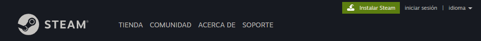
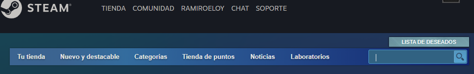
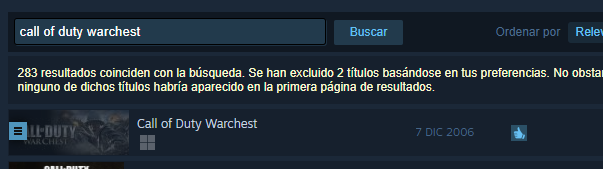
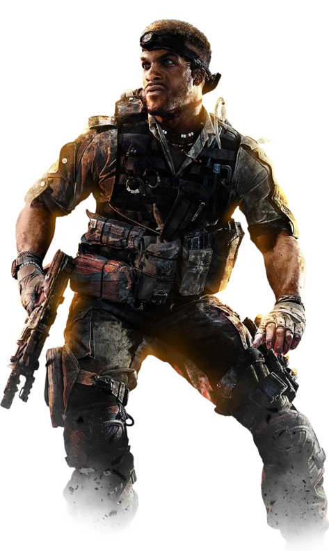

Si la PC/Laptop es propia, seguro tenés permisos para instalar programas.
Si la PC/Laptop es de TECO, tenes que pedir el permiso de ADMIN vía CYBERARK de la siguiente manera:
Desde TUID pedir el permiso “VF Elevación de Permisos Windows Viewfinity”
Elegir alguno de los perfiles que aparece, todos tienen acceso
Debe ser aprobado por el responsable del área en TUID
Desde TECOAPPS instalar el CyberArk VIEWFINITY (revisar primero porque generalmente las laptops de los ultimo 2 o 3 años ya lo tienen instalado) y reiniciar la Laptop para que tome las políticas una vez finalizado el RQ en TUID del punto (1)
Tener Steam Instalado y luego bajar el juego desde ahi:
Desde la web https://store.steampowered.com/ bajarse el steam desde “Instalar Steam” e instalarlo

Generar un usuario y contraseña se puede hacer una vez concluida la instalación del Steam en el mismo proceso
Una vez instalado el steam y que estemos logueados, buscamos el juego: “Call Of Duty Warchest”


Adquirirlo y seguir las instrucciones para instalarlo:
Este pack instala el Call of Duty 1, el Call of Duty United Offensive y el Call Of Duty 2
El Call of Duty United Offensive (que es el que jugamos) es una expansión del Call of Duty 1 por ende ambos son
necesarios; el Call Of Duty 2 viene extra.

COMO CONECTARSE:
CONFIGURACIÓN Y EJECUCIÓN DEL COD
Ejecutar el juego desde Steam, cuando nos de la opción, seleccionamos la que dice Multijugador
Dentro del juego, ir a Options, y del lado izquierdo al menu que dice Performance, ahi poner en NO la opción que dice “SYNC EVERY FRAME” (excepto que usen un monitor con tasa de refresco de 100Hz o mas)
Desde el menú principal ir a Multiplayer Options:
Ponerse el nombre debajo
Dejar en YES la opción Allow Downloads
Desde el menú principal ir a Join Game
Arriba donde dice Source, clicker para seleccionar Favorites
Luego click en New Favorite; en la ventana que aparece poner de nombre 3 letras al azar y en IP poner: 181.30.140.20:28960 (IMPORTANTE: NO USAR TECLADO NUMÉRICO, SIEMPRE LAS TECLAS DE LOS NÚMEROS ARRIBA DE LAS LETRAS)
Luego click en Filter Servers; en el listado de filtros dejar en NO las opciones Only Pure y Only Dedicated
Click abajo de todo en contraseña y poner la clave del servidor y click en ok
Click en Refresh arriba y debería aparecer en el listado el servidor; doble click en el mismo para unirse.